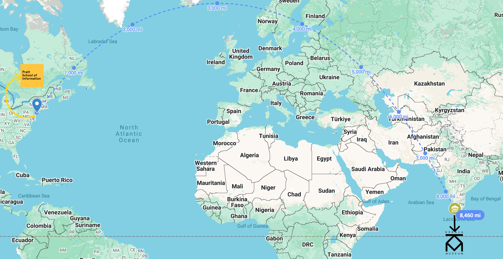
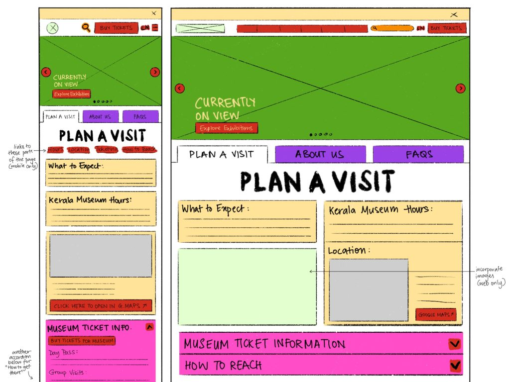
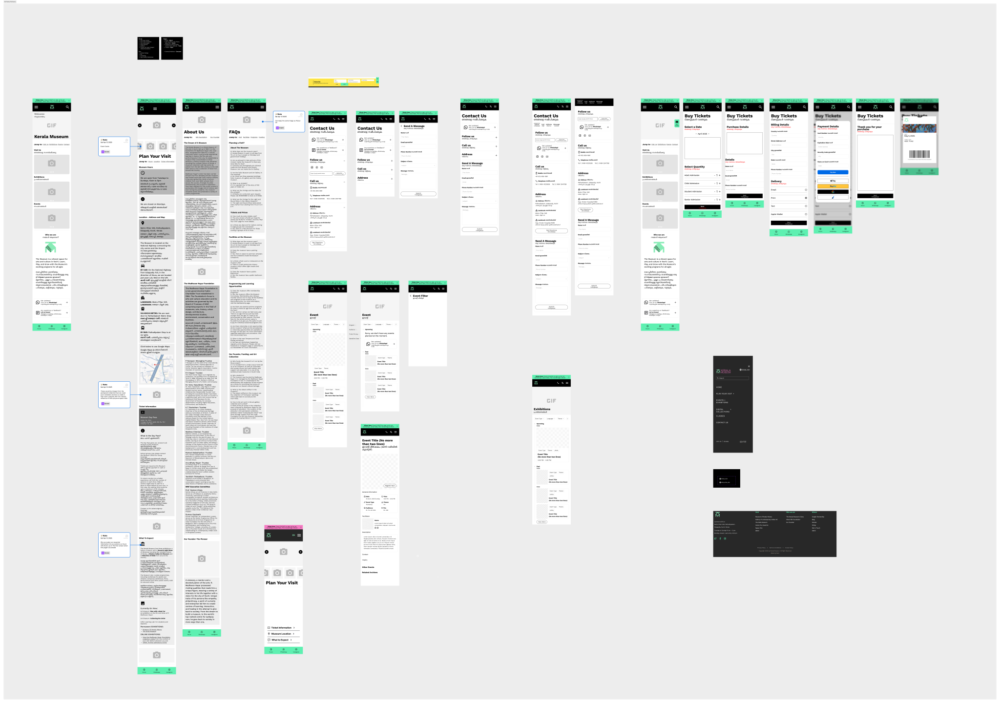

Bringing Kerala’s Stories to Life Online
Collaborating with Kerala Museum to redesign a mobile-first, accessible, and community-centered digital experience.
What Is Kerala Museum?
🏛 Evolution of the Museum
Kerala Museum, established in 1987, has undergone a remarkable transformation. Originally positioned as a tourist destination, under Director Aditi’s leadership it has evolved into a vibrant, community-centered cultural hub.
🖼 Museum Offerings
The museum offers multi-sensory exhibitions of local history, engaging lectures and talks, immersive performing arts, and community events.
“A progressive community center with a voice for the unvoiced.”


Challenges
 Because our team is remote and none of us had visited the physical museum, we needed a research-driven approach to avoid bias. From interviews, audits, and desk research, we surfaced three root issues:
- Gaps in Digital Engagement: Community members often bypassed the site and relied on museum staff or social media for updates.
- Accessibility & Inclusion Barriers: Inconsistent language, limited local‐language support, and structural complexity excluded many potential users.
- Usability & Navigation Issues: The site structure was overloaded with subcategories, making core actions (visits, events, tickets) hard to find.
Research & Insights
We interviewed 7 local users and museum staff, conducted benchmarking across 13 cultural institutions, and ran tree tests comparing old vs proposed information architecture. Insights from quotes, tests, and competitive audits shaped our direction.

Key Users
Our design needed to serve a variety of current and target audiences who interact with the museum (KM) in different ways:
- Local Community Members: Visitors, families, students who want easy access to events and cultural content.
- Researchers & Academics: Users interested in archives, exhibitions, and deeper content.
- Museum Staff & Curators: Internal users managing content, events, and visitor communications.
- Global Audience: Cultural enthusiasts abroad who want to experience Kerala Museum digitally.
Process
Sketches & Wireframes
From sketches and low-fidelity wireframes, we moved into mid- and high-fidelity mockups in Figma. We annotated screens to reflect design rationale, following our guiding principles of explore, connect, and engage.
Early Testing
We tested three core flows with seven participants (some bilingual). Feedback informed improvements in navigation labels, FAQ clarity, event filters, mobile responsiveness, and accessibility enhancements.
Solution Approach
To address the challenges, we formulated three guiding principles and aligned our design decisions accordingly:
- Explore: enhance discovery and community storytelling
- Connect: enable accessible communication and event interaction
- Engage: simplify navigation and make content intuitive

Explore the full design artifacts:
Impact & User Feedback
User Feedback
“Woah, this site is beautiful! I love the use of colors.”
Users praised the visual clarity, improved navigation, and inclusive language. We refined the FAQ, event flows, and mobile layouts based on their input.
Looking Ahead
Built as a flexible framework, the redesign supports:
- Dynamic event & exhibition updates
- Content in Malayalam & English
- Social media integration for real-time content
- Modular CMS tools for staff curation & scaling
Next Steps & Lessons Learned
Future Implementation
Integrate CMS systems, enable community content submissions, refine localization (Malayalam/English), and build dynamic tools for staff engagement and feedback.
Lessons Learned
- Remote UX work demands deep empathy, local input, and rigorous testing.
- Cultural context must drive interface choices, not just aesthetics.
- Modular design and clear navigation help scale complexity gracefully.